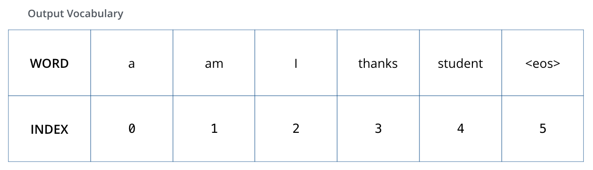

Illustrated Transformer翻译
The Illustrated Transformer翻译
前言：Transformer的论文写的非常简洁，以至于有很多东西并不是很清楚，包括整个Transformer是怎么训练怎么运作的。这里借着对本文的翻译，加深理解。
A High-Level Look
我们可以把模型看作是一个黑盒。在机器翻译的应用中，它会把一个句子从一个语言翻译到另一个语言。
打开这个黑盒，我们可以看到一个编码器和一个解码器，二者之间存在联系。
编码器部分是六个编码器堆叠在一起（论文里是六个，可以选择其他数量）。解码器也是一样，是六个解码器的堆叠。

注意这里的结构图，前五个encoder的输出都只是传递给下一个encoder，最后一个encoder的输出会传给decoder。
每一个编码器都是相同的结构（但是它们的参数并不共享）。每个编码器可以拆分为两个子层：
编码器的输出会首先进入一个自注意力层，在编码某个单词时，自注意力层可以同时看到输入句子中的其他单词。这一点后面会详细说。
自注意力层的输出会进入一个前馈神经网络，在每个自注意力层的输出部分都会有这样结构相同的的前馈神经网络。
解码器有编码器的层次结构，但在它们之间还有一个注意力层，这个注意力层帮助解码器注意到输入句子的相关部分（和seq2seq模型中的注意力相似）。
Bringing The Tensors Into The Picture
现在我们进入这个模型的主要部分，我们将以张量或向量为对象，看看它在模型中是怎么变化得，以及输入是如何变成输出的。
首先，我们使用嵌入算法来将输入的单词转化为向量：

假设每个词嵌入的维度是512维，这里仅用四个方格来表示512维
嵌入只发生在编码器的最底层，也就是输入编码器的时候。每一个编码器会接收一个由512维向量组成的列表，对于最底层的编码器来说，它接收的是生成的词向量，但是对于其他上层的编码器，它们接收的是下一层编码器的输出。输入嵌入的大小是可以设置的超参数，一般而言会设置成训练集中最长句子的长度。
当输入的句子进行嵌入后，它们会依次进入编码器的两个子层：

这里我们可以看到Transformer的一个关键属性，即每个位置上的单词在编码器中都有自己的运行路线。在自注意力层中，这些路线之间会存在依赖关系，但在前馈神经网络中却没有依赖关系，因此所有路线在通过前馈神经网络时是可以并行计算的。
下面我们用一个短句举例，看看在编码器的每个词层中都发生了什么。
Now We're Encoding！
正如我们所说的，一个编码器接受一个向量列表作为输入。它将这个列表中的向量传递到自注意力层后进入前馈神经网络，然后将输出传递给下一个编码器：

Self-Attention at a High Level
不要一看“self-attention”就觉得这是个每个人都很很熟悉的词，其实我个人感觉，在看《Attention is all you need》之前我都没有真正理解自注意力机制。现在让我们看一下自注意力机制。
假设我们想要翻译下面这句话：
The animal didn't cross the street because it was too tired
这个句子里的it是指什么？它是指street还是animal？这对人来说不是问题，但对机器来说并不容易。
当模型处理到it的时候，自注意力可以把it和animal关联起来。
当模型处理句子中的每个单词时，自注意力都会在这个句子的其他位置寻找线索，从而可以让这个单词被编码得更好。
如果你对RNN比较熟悉的话，可以回想一下RNN中保持隐藏状态是如何将之前处理过的向量和现在正在处理的向量建立联系的。而在Transformer中，自注意力也是这样，可以将其他相关单词的“理解”融入到当前单词的处理中。
当我们在第五个（最后一个）编码器中处理
it的时候，会发现注意力机制更关注“The animal”，并会把对其的理解融入到对it的编码中。
上面的可视化图是官方的Tensor2Tensor notebook。
Self-Attention in Detail
下面看看怎样使用向量计算自注意力，再看一下实际中是怎么使用矩阵来实现的。
自注意力计算中的第一步是对每个编码器的输入向量计算出三个向量，或者说，我们对每个输入向量都创建一个Query向量、一个Key向量和一个Value向量。三个向量是通过将输入向量分别乘上三个权重矩阵（
注意在这里，新的向量会比嵌入向量小一些，它们都是64维，而输入向量和编码器的输入输出向量都是512维。这三个向量并不是必须比编码器输入输出的维度小，这样做是为了让多头注意力的计算更稳定。

那么query、key和value向量是什么呢？
它们是计算注意力时的抽象概念，往下看，看完就懂了。
计算自注意力的第二步是计算注意力得分。假设现在我们要计算输入的第一个单词“Thinking”的自注意力，我们需要根据当前单词给输入序列的每个单词打分，这个分数决定了当我们处理到当前单词时，应该给其他位置上的单词付出多少关注。
这个得分是通过query向量和key向量的点积求出来的。所以当我们处理到第一个位置的单词的自注意力时，第一个得分就是q1和k1的点积，第二个得分就是q1和k2的点积：
第三、四步是将分数结果除以8（论文中key向量的维度是64，而8是64的平方根。这样可以让梯度计算的时候更稳定。可以取其他值，这是默认设定），然后将结果进行softmax计算。softmax可以将注意力分数归一化，使得分数均为正数且和为一：

这个softmax分数决定了在计算当前位置单词时，其他单词受到的关注的大小。很显然，当前位置会有最高的softmax分数，但有时候也会注意到与当前单词相关的另一个单词。
第五步是将每个value向量乘以注意力分数（准备把它们加起来）。这么做的目的是留下我们想要关注的单词的value（注意力分数高的单词），并且舍弃掉不太相关的单词（它们的注意力分数会比较低，比如乘上0.001这种小数字）。
第六步是将上一步的结果相加，这会产生当前位置（现在来说的话就是第一个词Thinking）的自注意力层结果：

这就是自注意力的计算。计算的结果向量可以直接传递给前馈神经网络。然而，为了更快速的计算，实际的计算是以矩阵的形式完成的。下面我们来看看矩阵是怎么算的。
Matrix Calculation of Self-Attention
第一步是计算query、key和value矩阵。我们直接把所有的嵌入打包成一个矩阵

最后，因为我们使用的是矩阵，所以可以把上面的第二到第六步都压缩到一个公式来求取自注意力层的输出：

The Beast With Many Heads
论文进一步通过增加所谓的多头注意力机制来改进自注意力层。这样做有两个好处：
- 它拓展了模型关注不同位置的能力。在上面的例子中，z1多多少少受到了每个其他单词的影响，但是它还是被自身对应的单词所支配。如果我们想要翻译一句像“The animal didn't cross the street because it was too tired”的话，那么这样的模型会知道"it"在指什么。
- 它给予了注意力层许多的“表示子空间”。我们将知道，这是指有不止一对Query、Key和Value的权重矩阵（在Transformer中，使用了八个注意力头，因此会得到八个结果）。每一个权重矩阵都是随机初始化的。在训练后，每一个权重矩阵对会把输入嵌入（或来自低层编码器/解码器的输出）投影到不同的表示子空间。

如果我们像上图这样做相同的自注意力计算，也就是用不同的权重矩阵做八次运算，会得到八个不同的Z矩阵：

但这会引出一些问题。前馈神经网络是无法接受八个矩阵作为输入的，它只想接收一个矩阵（一个向量一个单词）。所以我们需要一个可以把八个矩阵合并成一个矩阵的方法。
该怎么做呢？我们可以把这些矩阵连起来，然后乘上一个额外的权重矩阵

这就是多头注意力的全部内容了，这矩阵可真够多的。让我们试着把所有内容放到一张图看一下：

既然已经介绍完多头注意力，让我们看看之前的例子中，不同的注意力头在编码“it”的时候在关注什么：
如果我们把所有的注意力头都放到图上，事情好像变得更复杂了呃：
Representing The Order of The Sequence Using Positional Encoding
我们现在都还没说如何表示输入序列中词的顺序。
为了解决这个问题，Transformer给每个输入的嵌入都加上了一个向量。这些向量遵循某种特定的模式，可以帮助模型确定每个词的位置或者不同词在句子中的相对距离。我们可以很直觉地认为，加上这些向量后，一旦嵌入向量被投影到Q、K、V的向量空间中并进行点积注意力时，它们会提供有意义的距离信息。

位置编码和输入嵌入具有相同的维度，比如都用四个方格表示：

那么位置编码到底遵循着什么模式呢？
在下面的图中，每一行对应着一个向量的位置编码，所以第一行就是我们输入序列中的第一个词嵌入的位置编码。每一行有512个值（因为输入嵌入是512维），每个值都介于-1到1之间。我们给编码进行了上色从而更好地可视化：

在论文的3.5节可以看到位置编码的具体公式。我们可以在get_timing_signal_1d()方法中看到实现。这并不是位置编码的唯一方法，但它的优点在于可以扩展到没见过的的序列长度（比如我们的模型被要求翻译一个比我们训练集中任何句子都要长的句子）。
The Residuals
在继续往下讲之前，我们需要注意编码器的一个细节，那就是每个子层都有一个残差连接，之后是一个layer-normalization。

如果我们将自注意力间的向量和层归一化操作进行可视化，将会是下面的结果：

当然在解码器的子层中也是这样。如果我们像画一个具有两个编码器和解码器的Transformer，就是下图：

The Decoder Side
现在我们已经介绍完了encoder的大部分概念，所以我们同样也知道了deocder的各个部分是如何工作的。但我们需要关注它们是如何一起工作的。
编码器首先处理输入序列，编码器的输出会被转化为一组K和V的注意力向量对。这个注意力向量对会被传递给每个解码器的"encoder-decoder attention"层，这有助于解码器把注意力放在输入序列的合适位置。

输出步骤会一直重复，直到遇到一个表示句子结束的特殊符号，表明transformer解码器已完成输出。每一步的输出都会在下一个时间步传递给最底层的解码器，且每一次的输出只是一个词。和编码器相同，在解码器中我们也会添加位置编码来表示每个单词的位置。

解码器的自注意力层和解码器中的有一些不同。
在解码器中，我们只允许注意力层看到输出序列的较早的位置（已输出位置的信息）。实现的方式是在自注意力层的softmax之前将未来的输出位置进行掩膜（设置为-inf）。
“encoder-decoder attention“层的工作原理和前边的多头自注意力差不多，但是Q、K、V的来源不用，Q是从下层创建的（比如解码器的输入和下层decoder组件的输出），但是其K和V是来自编码器最后一个组件的输出结果。
编码器是对整个输入序列进行编码，然后将其结果转化为K和V传给解码器，这个K、V包含了整个句子的所有信息，但解码器的输入是什么？是拼接之前解码器的输出单词，所以解码器造出来的Q仅包含已经输出的内容。
The Final Linear and Softmax Layer
解码器最后的输出是一个浮点向量，如何把它变成一个单词呢？那就是最后一个线性层的工作了，我们称之为Softmax层。
线性层就是一个简单的全连接神经网络，它将解码层输出的向量投影成一个更大的向量，称之为logits向量。
我们假设我们的模型从训练集学习了10000个不同的英语单词（训练词汇表），那么logits向量的维度也是10000，每一维对应一个单词的分数。
之后，softmax层将这些分数转化成概率（即归一化，全部为正数，相加为一）。具有最大概率的单词会被选择，然后作为当前时间步的输出。
Recap Of Training
现在我们已经了解了整个Transformer的前向传播过程了，再来看一下训练过程。
在训练期间，未训练的模型会进行同样的前向传播。由于我们是在有标记的训练集上进行训练，所以我们可以将其输出与实际的输出进行比较。
为了可视化这个过程，我们假设我们的词汇表纸包含六个单词（a，am，i，thanks，student和

一旦我们定义了我们的输出词汇表，我们就可以用长度相同的向量来表示词汇表中的词了，这被称为独热编码。例如，我们可以用下面的向量来定义“am”：

接下来我们讨论一下这个模型的损失函数，损失函数是训练阶段优化模型的指标，通过损失函数，可以帮助我们得到一个更好的模型。
The Loss Function
假设我们正在训练我们的模型，并且现在是训练的第一步。我们正在训练一个简单的例子：把“merci”翻译成“thanks”。这意味着，我们希望我输出的概率分布可以指向单词“thanks”。但因为这个模型还没有经过训练，所以这不太可能发生。

我们如何比较两种概率分布？这个例子里我们只是将两者相减。更多关于损失函数的介绍，请看cross-entropy和Kullback-Leibler divergence。
上面只是一个非常简单的例子。更实际一些，我们使用一个短句子。比如输入是“je suis étudiant”，希望输出是"i am a student"。这个时候模型的输出就不应该是一个词的概率分布了，能不能连续输出概率分布，最好满足以下要求：
- 每个概率分布向量长度都和词汇表长度相同。我们的例子中是6，实际应用中可能是30000或50000；
- 第一个概率分布应该在与单词“i”相关的位置上具有最高的概率；
- 第二个概率分布应该在与单词“am”相关的位置上具有最高的概率；
- 以此类推，直到第五个输出表示
符号，而这个符号也应该在词汇表中占有一席之地。

在经过足够数据和事件的训练后，我们希望会产生下面的概率分布：

因为模型一次产生一个输出，我们可以认为模型会取出概率分布最大的单词并舍弃其余的。这是一种方法，也叫贪心算法。另一种方法是束搜索(beam search)，它会保留概率最高的两个单词，然后在下一步继续选择两个概率最高的值，以此类推，这里我们把束搜索的宽度设置为2。